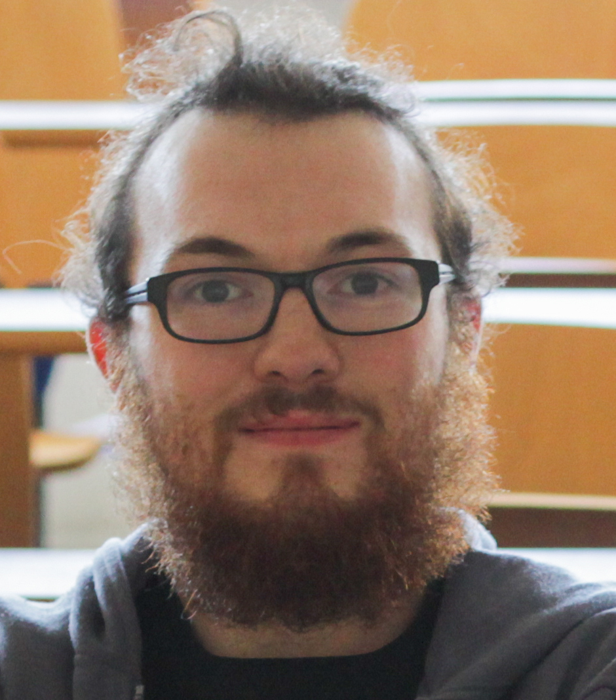

En savoir plus sur le 4L Trophy :
Thomas
De nature curieux, je suis toujours prêt à me lancer dans des nouvelles aventures. Cette envie et ma passion pour les nouvelles technologies m'ont fait prendre le chemin d'une école d'ingénieur dans l'informatique. Le monde de la data et du web sont des domaines qui m'attirent fortement. Je suis également secouriste, l'idée d'être présent pour son prochain est une valeur importante pour moi. Le 4L Trophy est un vrai challenge à faire, c'est avec hâte que je relève le défi.

Nathanaël
Passionné par l'informatique depuis son plus jeune âge, j'étudie maintenant en école d'ingénieurs pour me spécialiser dans l'informatique embarquée. Depuis plus de trois ans, je suis aussi secouriste à la Croix-Rouge Française dont je défends les valeurs. Féru de photographie, je suis avide de nouvelles expériences et aventures en tout genre.

Éva
Le troisième membre, et non des moindres, de l'équipage, c'est Éva ! La jeune 4L Clan soufflera ses 30 bougies l'année prochaine. Née en 1989 dans les usines Cléon, elle fait partie des plus puissantes 4L avec un moteur 1108cm3 (pour 34 chevaux). Elle fut d'abord blanche, puis bleue, elle est maintenant rouge ! L'année prochaine sera sa troisième participation au 4L Trophy, et elle y est déjà bien préparée. Il lui faudra malgré tout une petite visite chez le garagiste pour quelques travaux et vérifications.
Notre budget
L'objectif est d'obtenir une somme de 10 000 euros pour financer ce projet.
Les dépenses pour réaliser ce projet :
- Inscription : 3300€
- Essence, péages : 1000€
- Assurances obligatoires : 100€
- Matériel : 600€
- Achat / préparation 4L : 5000€
Mediatisation
Financer ce projet est une super idée, mais quel est le gain pour moi?
Voici une petite liste des choses que l'on peut faire en échange d'un financement:
- Affichage de l'entreprise sur ce site gratuitement
- Affichage de l'entreprise la page facebook de l'association
- Bouche à oreille
- Affichage de l'entreprise sur la 4L